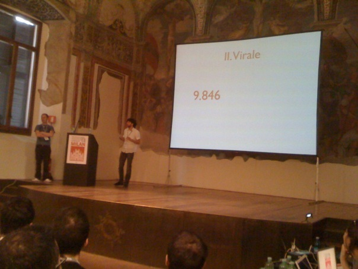
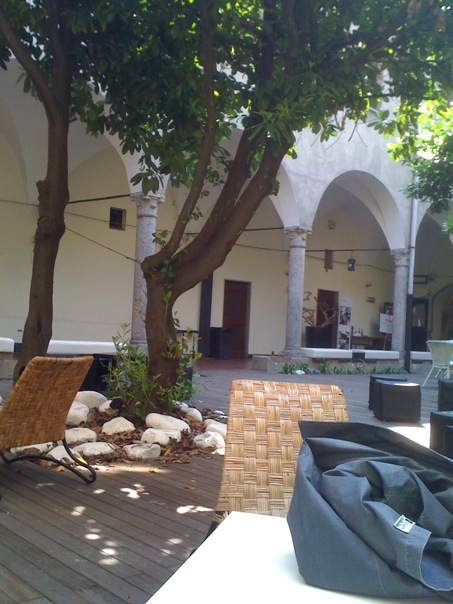

Facebook Developer Garage 2009, Milan (Italy)

This is my recap of the first italian facebook developer garage, held in milan on April 23, 2009, and hosted by mikamai. the morning has been dedicated to developer sessions, the afternoon to marketing & communication ones. some videos of the event are available here.
Morning: developer session
The first talk was held by James Leszczenski, facebook engineer, who presented the connect platform vision, mission, and values. interesting, besides the talk, for user participation: the audience was deeply interested about which information they get from facebook, how should they handle it, and which means connect does provide to match identities and find friends on an enabled web site.
Later I had the occasion to ask James about whether FB was inclined or not to adopt OpenID as an authentication method: he said that connect and OpenID both allow users to have unique login credentials to access multiple sites, but connect also allows to exploit the power of facebook social graph to allow users to communicate and share information. so, the short answer is “no”. Then I proposed him to implement OpenID on FB itself, so that connect could become really a superset of openID, but he said that “as a company, these are tough decisions I could not give an answer right now”. Fair enough :).
UPDATE: on April 27th 2009, techcrunch reports they heard that Facebook will embrace OpenID as a mean to authenticate users. Great news, looking forward for an official statement from Facebook! :)
The second talk was held by Vincenzo Acinapura, who described the basic means to create an application on the facebook platform. He explored the technologies behind it (XFBML, FQL, FBJS), the main integration points whitin the platform (notifications, publisher, ...), and he showed sample code to implement some of the most used FBML tags (fb:comments, fb:share, fb:feed, and so on). He eventually remembered the importance of automating the deploy of applications, and suggested to use capistrano to achieve it.
Then, the Facebook Sumo Contest was started: three developers had one two hours to cook up a functional facebook application that would then be judged by Facebook’s James and by the claps of the audience :). In the end only two of them made it, the first one being an italian guy who wrote an app to give gifts to friends; the second one a french (I think) guy who built an app to organize parties with friends, invite people, and enjoy. The former won, but in my opinion at least the latter did show a bit more creativity. Of course both of them were victims of the murphy’s law, because the apps didn’t work on the first shot :).

Third talk by andrea reginato and andrea franz, who started up defining what does viral mean, and how the social graph can allow anyone to distribute content to a very large number of users. in a nutshell, as long as your content is well worded and interesting, word-of-mouth distribution via social networks on which content publishing is “easy as pie” is a powerful way to make your content spread across millions of potential interested people.
How to achieve it? They explored how FB connect can augment our sites and give users ability to comment and interact with them using their facebook credentials, and then spread the interactions via facebook in order to reach a broader audience. it isn’t rocket science, but from my experience, it can work, as long as the content is itself useful and valuable, and most importantly it does not appear fake and as advertisement to the majority of the users. I think that facebook and twitter are also powerful tools to analyze and identify which kind of content is interesting right now for people, and model the viral distribution upon these insights.
There has been much interaction between the audience, interested mainly on how to integrate it within their web site while maintaining their own signup/login system, privacy concerns, policing and caching of information (which one to cache, how, and for how long), and legal issues. When there is complaint on data shown on my web but posted and hosted on facebook servers, who is the legal representative to question about? A spokesman from civile.it stated that the responsible is to be tracked by the owner of the servers on which data is hosted: it’s facebook itself.
The two Andreas eventually showcased a demo game for the fb platform built with sinatra, prototype and FBJS. The app asks you to identify one of your friends by looking at a subset of profile pictures: every one you guess (in 10 seconds at most), another picture appears, and difficulty increases. The number of friends you identified determines the “level”, that you can post on your profile once you’re done :).
After their talk, we did a lunch break and finally I joined with a friend of mine, who arrived late as usual ;).

Afternoon: marketing and communication
The afternoon was dedicated to marketing and communication, and to all the ways you can exploit the facebook platform to bring traffic to your site, or to generate viral information via the social connections between people, and featured some case histories by the authors of who has the biggest brain application, “Ninja Marketing:http://ninjamarketing.it and the makers of skoda in love application (cayenne marketing).
First of all, Lorenzo Visciani (mikamai co-founder) described how facebook pages can help marketers to advertise content and analyze user traffic in order to improve conversions: because facebook permits users to insert much information about themselves, this data can be aggregated and effectively shown in the statistics part of a facebook page. For a more detailed explanation, check out the Facebook pages product guide published back in march 2009.
Then, fun time, because of the projection of a video by the ironic neomelodic singer Manuele D’Amore, with his song lasciarsi su facebook (breaking up on facebook). Who doesn’t know neomelodic neapolitan songs, they are a product of the popular naples culture of which Gigi D’Alessio is one of the most known performers.
Then, politics time. Ivan Scalfarotto (running for 2009 european elections) and Giuseppe Civati were on stage, and talked about politics and social networking, a much buzzed topic these days, mainly because of obama’s successfull usage of it that resulted him taking office at the white house on january 20, 2009. I think that the core of it was his message, not being “vote for myself”, rather being “go vote, you dumbxxx!” :), a perfect example of giving voice to a psico-social tension via the internet. People spread out via facebook, twitter, and other social networks their action of being gone to vote, and as psychologists have explained many times, “People will do things that they see other people are doing”.
The downside of this talk was that was too much politics oriented, and wheter we should talk about politics and the internet, some felt that the guy was pushing it too hard. Hey, that’s what good about social media: give voice to everyone, and when someone is abusing the stage, shout it loud! :).
After politics, deep marketing time: the most interesting (in my opinion) talk of the whole day was the one held by the folks at ninja marketing, who identified the “chemistry of viral marketing” being the “viral DNA” and appropriate “seeding” thru social media. The DNA is about emotions: joy, anger, sadness, fear, and (of course) surprise, but the most important of them all is catharsis. Citing Wikipedia:
[..] the term “catharsis” refers [..] to the sensation, or literary effect, that would ideally overcome an audience upon finishing watching a tragedy (a release of pent-up emotion or energy).
These emotions suddenly identify a psycho-social tension, over which you should be smart enough to build means to give it voice through social media, like the whopper sacrifice marketers did. The tension here was the shared willingness to remove “friends” from our social graph, but the inability to do it in order to avoid possible remarks from them. But when you had a reason to do it to gain a free whopper, here’s that people started to drop others from their friend lists, even if they were not interested in the whopper at all. The Obama experiment also (IMHO) is a vivid example of a psycho-social tension (as I stated before), that was successfully exploited and gave its results.

The penultimate talk, held by Daniela Cangiano, described a case history by the marketers that realized the skoda in love for skoda cars (now unavailable on facebook). In a nutshell, the app asked the user five questions and found out of them the best match for a date by choosing from your friends. The app, by design, chose the results randomly and always gave a percent match greater than 80%. When displaying the match, the advertisement was also shown, inviting the user to buy a skoda car and go out with the matching friend for a date.
The key points of the app were the seasonality (launched some days before valentine day), the wording, very simplicistic and ironic, communication, interactivity, yada, yada yada. The host then pointed out that facebook is an “amplifier of social interactions” (because of the missing physical contact and the written communication, I’d add) and that is a powerful vehicle to convey information to customers. Daniela then stated that businesses should neither underestimate facebook value, being it the “resonance of the pulsating heart of the ‘net”, nor considering it simply a dumb vehicle, because it is “by people, for people”. I think that her claims were valid at a first glance, but quite exaggerated because the key here is “the internet”, not “facebook”. The internet opened up our minds by giving us endless points of view shared by millions of people that daily blog, tweet, and also update their status on facebook. But it’s the internet, dude.
Also, Daniela’s claims weren’t reflected in the application they built, as an audience member noted: “if you say that facebook is by people and for people, why did you made an app that gave them a false result? Which kind of enjoyment did it make to them, apart from finding a false match?”. She answered that the app wasn’t meant to actually find matches, but just to “give some minutes of “fun” to the user, and then convey the advertising message”. To me, it looks awful marketing, abusing an already abused seasonality (valentine day), and it’s just an example on how things should NOT be done.
But, did it work? The audience asked “how many conversions (in terms of cars sold) did you have from the app?” She replied: “well, this is only a part of a broader marketing campaign, and I cannot give out results here. if you’re interested, mail me at daniela DOT cangiano AT cayenne DOT it”. If you mail her, let everyone know by posting a comment, thanks :).
The last talk was held by the lead developer of helloTxt, an app that allows you to update your status on multiple networks by using a single form. He described how, once the core frameworks and interfaces of your web site are up and running, it’s just a matter of weeks to code up a facebook app and start spreading it: they took only 1 developer, 1 designer, 1 copywriter and 1 marketer to have it running.
Conclusions
To me, the event was really interesting and I thank both the hosts and everyone who held talks on stage, my brain was really satiated at the end :). As you’ve read from this post (hey, thanks for making it to the end! :) the topics were spanned on really many fields (technology, sociology, politics, marketing), and it’s amazing that the internet (and social media) can blur all of them into a single platform, and give humans new ways of study and implement them.
I hope only that james AT facebook DOT com will take the advice I gave him before leaving: “BE OPEN!” because we need open technologies, open standards, and open knowledge, so that no private company can control them, for humanity’s sake.
I’d love to hear your opinion, thoughts, and critics. Share them in the comments!


About this entry
You’re currently reading “Facebook Developer Garage 2009, Milan (Italy)”, an entry on sindro.me
- Published:
- 04.26.09 / 23PM
- Updated:
- 10.08.16 / 01AM
- Sections:
- development politics
- Tags:

1 comment